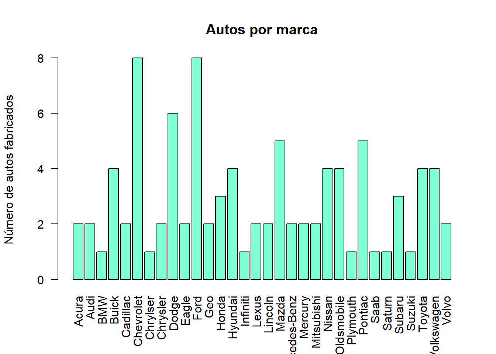
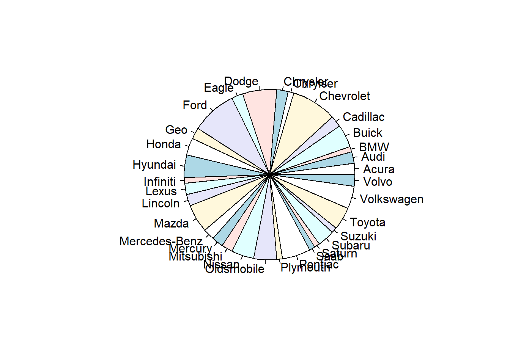
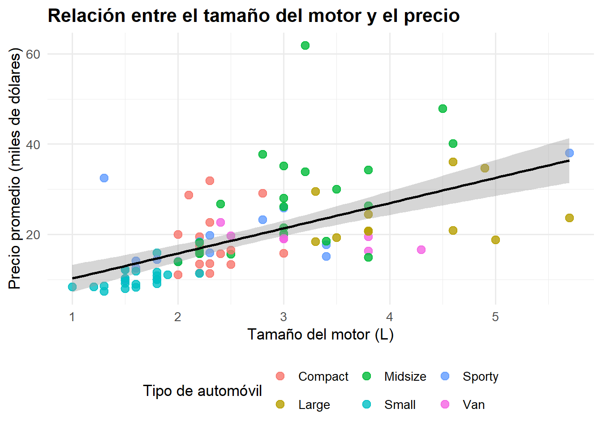
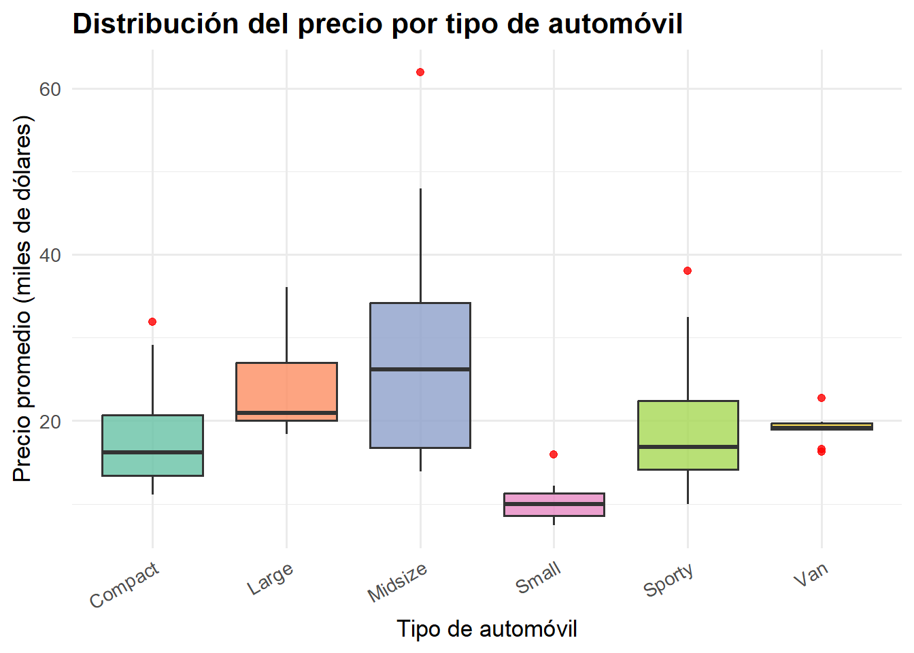
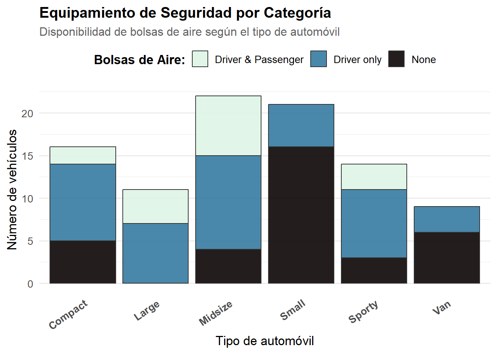

library(MASS)
library(ggplot2)Warning: package 'ggplot2' was built under R version 4.5.3library(MASS)
library(ggplot2)Warning: package 'ggplot2' was built under R version 4.5.3El paquete MASS en R proporciona funciones y conjuntos de datos de Modern Applied Statistics with S y se utiliza ampliamente para el modelado estadístico y el análisis de datos.
Usaremos la base de datos “Cars93”. Los automóviles se seleccionaron al azar entre los modelos de autos de 1993 que figuraban tanto en la revista Consumer Reports como en la guía de compra PACE. Se excluyeron las camionetas pickup y los vehículos utilitarios deportivos (SUV) debido a la información incompleta en la revista Consumer Reports. Los modelos duplicados (por ejemplo, Dodge Shadow y Plymouth Sundance) se incluyeron como máximo una vez.
help(Cars93)starting httpd help server ... doneView(Cars93)
str(Cars93)'data.frame': 93 obs. of 27 variables:
$ Manufacturer : Factor w/ 32 levels "Acura","Audi",..: 1 1 2 2 3 4 4 4 4 5 ...
$ Model : Factor w/ 93 levels "100","190E","240",..: 49 56 9 1 6 24 54 74 73 35 ...
$ Type : Factor w/ 6 levels "Compact","Large",..: 4 3 1 3 3 3 2 2 3 2 ...
$ Min.Price : num 12.9 29.2 25.9 30.8 23.7 14.2 19.9 22.6 26.3 33 ...
$ Price : num 15.9 33.9 29.1 37.7 30 15.7 20.8 23.7 26.3 34.7 ...
$ Max.Price : num 18.8 38.7 32.3 44.6 36.2 17.3 21.7 24.9 26.3 36.3 ...
$ MPG.city : int 25 18 20 19 22 22 19 16 19 16 ...
$ MPG.highway : int 31 25 26 26 30 31 28 25 27 25 ...
$ AirBags : Factor w/ 3 levels "Driver & Passenger",..: 3 1 2 1 2 2 2 2 2 2 ...
$ DriveTrain : Factor w/ 3 levels "4WD","Front",..: 2 2 2 2 3 2 2 3 2 2 ...
$ Cylinders : Factor w/ 6 levels "3","4","5","6",..: 2 4 4 4 2 2 4 4 4 5 ...
$ EngineSize : num 1.8 3.2 2.8 2.8 3.5 2.2 3.8 5.7 3.8 4.9 ...
$ Horsepower : int 140 200 172 172 208 110 170 180 170 200 ...
$ RPM : int 6300 5500 5500 5500 5700 5200 4800 4000 4800 4100 ...
$ Rev.per.mile : int 2890 2335 2280 2535 2545 2565 1570 1320 1690 1510 ...
$ Man.trans.avail : Factor w/ 2 levels "No","Yes": 2 2 2 2 2 1 1 1 1 1 ...
$ Fuel.tank.capacity: num 13.2 18 16.9 21.1 21.1 16.4 18 23 18.8 18 ...
$ Passengers : int 5 5 5 6 4 6 6 6 5 6 ...
$ Length : int 177 195 180 193 186 189 200 216 198 206 ...
$ Wheelbase : int 102 115 102 106 109 105 111 116 108 114 ...
$ Width : int 68 71 67 70 69 69 74 78 73 73 ...
$ Turn.circle : int 37 38 37 37 39 41 42 45 41 43 ...
$ Rear.seat.room : num 26.5 30 28 31 27 28 30.5 30.5 26.5 35 ...
$ Luggage.room : int 11 15 14 17 13 16 17 21 14 18 ...
$ Weight : int 2705 3560 3375 3405 3640 2880 3470 4105 3495 3620 ...
$ Origin : Factor w/ 2 levels "USA","non-USA": 2 2 2 2 2 1 1 1 1 1 ...
$ Make : Factor w/ 93 levels "Acura Integra",..: 1 2 4 3 5 6 7 9 8 10 ...Variable Manufacture
pie(tab.fabricante)
unique(Cars93$Manufacturer) [1] Acura Audi BMW Buick Cadillac
[6] Chevrolet Chrylser Chrysler Dodge Eagle
[11] Ford Geo Honda Hyundai Infiniti
[16] Lexus Lincoln Mazda Mercedes-Benz Mercury
[21] Mitsubishi Nissan Oldsmobile Plymouth Pontiac
[26] Saab Saturn Subaru Suzuki Toyota
[31] Volkswagen Volvo
32 Levels: Acura Audi BMW Buick Cadillac Chevrolet Chrylser Chrysler ... Volvotab.fabricante = table(Cars93$Manufacturer)barplot(tab.fabricante, las = 2, ylab = "Número de autos fabricados", col = "aquamarine", main = "Autos por marca")
pie(tab.fabricante)
Contruimos un diagrama de dispersión con una línea de regresión, para identificar si existe una tendencia entre ambas variables.
ggplot(Cars93,
aes(x = EngineSize,
y = Price,
color = Type)) +
geom_point(size = 3, alpha = 0.8) +
geom_smooth(method = "lm",
se = TRUE,
color = "black",
linewidth = 1) +
labs(
title = "Relación entre el tamaño del motor y el precio",
x = "Tamaño del motor (L)",
y = "Precio promedio (miles de dólares)",
color = "Tipo de automóvil"
) +
theme_minimal(base_size = 13) +
theme(
plot.title = element_text(face = "bold"),
legend.position = "bottom"
)`geom_smooth()` using formula = 'y ~ x'
Interpretación
La gráfica muestra una correlación directamente proporcional entre el tamaño del motor y el precio promedio de los automóviles. Los vehículos con motores de mayor tamaño presentan precios más elevados. Los colores permiten distinguir tambien como estas dos variables tambien estan relacionadas con el tipo de automovil.
Se utiliza un BoxPlot para comparar la distribución de los precios entre los diferentes tipos de automóviles.
ggplot(Cars93,
aes(x = Type,
y = Price,
fill = Type)) +
geom_boxplot(alpha = 0.8,
outlier.color = "red") +
labs(
title = "Distribución del precio por tipo de automóvil",
x = "Tipo de automóvil",
y = "Precio promedio (miles de dólares)",
fill = "Tipo"
) +
scale_fill_brewer(palette = "Set2") +
theme_minimal(base_size = 13) +
theme(
plot.title = element_text(face = "bold"),
axis.text.x = element_text(angle = 30, hjust = 1),
legend.position = "none"
)
Interpretación
El BoxPlot permite comparar como varian los precios entre los distintos tipos de automóviles. Se observan diferencias en la mediana y en la dispersión de los precios, además de algunos valores atípicos que corresponden a vehículos con precios considerablemente superiores al resto de su categoría.
Para responder a esto, utilizamos tablas de contingencia que nos permiten observar las frecuencias y cruzar los datos entre el fabricante, el tipo de vehículo y la disponibilidad de bolsas de aire.
unique(Cars93$Type)[1] Small Midsize Compact Large Sporty Van
Levels: Compact Large Midsize Small Sporty Vantable(Cars93$Type)
Compact Large Midsize Small Sporty Van
16 11 22 21 14 9 table(Cars93$Manufacturer, Cars93$Type)
Compact Large Midsize Small Sporty Van
Acura 0 0 1 1 0 0
Audi 1 0 1 0 0 0
BMW 0 0 1 0 0 0
Buick 0 2 2 0 0 0
Cadillac 0 1 1 0 0 0
Chevrolet 2 1 1 0 2 2
Chrylser 0 1 0 0 0 0
Chrysler 1 1 0 0 0 0
Dodge 1 0 1 2 1 1
Eagle 0 1 0 1 0 0
Ford 1 1 1 2 2 1
Geo 0 0 0 1 1 0
Honda 1 0 0 1 1 0
Hyundai 0 0 1 2 1 0
Infiniti 0 0 1 0 0 0
Lexus 0 0 2 0 0 0
Lincoln 0 1 1 0 0 0
Mazda 1 0 0 2 1 1
Mercedes-Benz 1 0 1 0 0 0
Mercury 0 0 1 0 1 0
Mitsubishi 0 0 1 1 0 0
Nissan 1 0 1 1 0 1
Oldsmobile 1 1 1 0 0 1
Plymouth 0 0 0 0 1 0
Pontiac 1 1 1 1 1 0
Saab 1 0 0 0 0 0
Saturn 0 0 0 1 0 0
Subaru 1 0 0 2 0 0
Suzuki 0 0 0 1 0 0
Toyota 0 0 1 1 1 1
Volkswagen 1 0 0 1 1 1
Volvo 1 0 1 0 0 0table(Cars93$Manufacturer, Cars93$Type, Cars93$AirBags), , = Driver & Passenger
Compact Large Midsize Small Sporty Van
Acura 0 0 1 0 0 0
Audi 0 0 1 0 0 0
BMW 0 0 0 0 0 0
Buick 0 0 0 0 0 0
Cadillac 0 0 1 0 0 0
Chevrolet 0 0 0 0 1 0
Chrylser 0 1 0 0 0 0
Chrysler 1 0 0 0 0 0
Dodge 0 0 0 0 0 0
Eagle 0 1 0 0 0 0
Ford 0 0 0 0 0 0
Geo 0 0 0 0 0 0
Honda 1 0 0 0 1 0
Hyundai 0 0 0 0 0 0
Infiniti 0 0 0 0 0 0
Lexus 0 0 1 0 0 0
Lincoln 0 1 1 0 0 0
Mazda 0 0 0 0 0 0
Mercedes-Benz 0 0 1 0 0 0
Mercury 0 0 0 0 0 0
Mitsubishi 0 0 0 0 0 0
Nissan 0 0 0 0 0 0
Oldsmobile 0 0 0 0 0 0
Plymouth 0 0 0 0 0 0
Pontiac 0 1 0 0 1 0
Saab 0 0 0 0 0 0
Saturn 0 0 0 0 0 0
Subaru 0 0 0 0 0 0
Suzuki 0 0 0 0 0 0
Toyota 0 0 0 0 0 0
Volkswagen 0 0 0 0 0 0
Volvo 0 0 1 0 0 0
, , = Driver only
Compact Large Midsize Small Sporty Van
Acura 0 0 0 0 0 0
Audi 1 0 0 0 0 0
BMW 0 0 1 0 0 0
Buick 0 2 2 0 0 0
Cadillac 0 1 0 0 0 0
Chevrolet 1 1 0 0 1 0
Chrylser 0 0 0 0 0 0
Chrysler 0 1 0 0 0 0
Dodge 1 0 1 1 1 1
Eagle 0 0 0 0 0 0
Ford 0 1 1 0 2 1
Geo 0 0 0 0 1 0
Honda 0 0 0 1 0 0
Hyundai 0 0 0 0 0 0
Infiniti 0 0 1 0 0 0
Lexus 0 0 1 0 0 0
Lincoln 0 0 0 0 0 0
Mazda 1 0 0 0 1 0
Mercedes-Benz 1 0 0 0 0 0
Mercury 0 0 0 0 1 0
Mitsubishi 0 0 1 0 0 0
Nissan 1 0 1 1 0 0
Oldsmobile 0 1 1 0 0 0
Plymouth 0 0 0 0 0 0
Pontiac 0 0 0 0 0 0
Saab 1 0 0 0 0 0
Saturn 0 0 0 1 0 0
Subaru 1 0 0 0 0 0
Suzuki 0 0 0 0 0 0
Toyota 0 0 1 1 1 1
Volkswagen 0 0 0 0 0 0
Volvo 1 0 0 0 0 0
, , = None
Compact Large Midsize Small Sporty Van
Acura 0 0 0 1 0 0
Audi 0 0 0 0 0 0
BMW 0 0 0 0 0 0
Buick 0 0 0 0 0 0
Cadillac 0 0 0 0 0 0
Chevrolet 1 0 1 0 0 2
Chrylser 0 0 0 0 0 0
Chrysler 0 0 0 0 0 0
Dodge 0 0 0 1 0 0
Eagle 0 0 0 1 0 0
Ford 1 0 0 2 0 0
Geo 0 0 0 1 0 0
Honda 0 0 0 0 0 0
Hyundai 0 0 1 2 1 0
Infiniti 0 0 0 0 0 0
Lexus 0 0 0 0 0 0
Lincoln 0 0 0 0 0 0
Mazda 0 0 0 2 0 1
Mercedes-Benz 0 0 0 0 0 0
Mercury 0 0 1 0 0 0
Mitsubishi 0 0 0 1 0 0
Nissan 0 0 0 0 0 1
Oldsmobile 1 0 0 0 0 1
Plymouth 0 0 0 0 1 0
Pontiac 1 0 1 1 0 0
Saab 0 0 0 0 0 0
Saturn 0 0 0 0 0 0
Subaru 0 0 0 2 0 0
Suzuki 0 0 0 1 0 0
Toyota 0 0 0 0 0 0
Volkswagen 1 0 0 1 1 1
Volvo 0 0 0 0 0 0Interpretación Las tablas multidimensionales muestran cómo cada fabricante concentra su producción en ciertos segmentos (tipos de automóvil). Al agregar la tercera variable de seguridad, podemos identificar si el equipamiento de bolsas de aire está estandarizado en la mayoría de los vehículos de una marca, o si está reservado únicamente para ciertos tipos de automóviles de mayor gama, dejando a otros modelos desprotegidos.
ggplot(Cars93,
aes(x = Type,
fill = AirBags)) +
geom_bar(color = "gray20",
alpha = 0.9,
linewidth = 0.5) +
labs(
title = "Equipamiento de Seguridad por Categoría",
subtitle = "Disponibilidad de bolsas de aire según el tipo de automóvil",
x = "Tipo de automóvil",
y = "Número de vehículos",
fill = "Bolsas de Aire:"
) +
scale_fill_viridis_d(option = "mako", direction = -1) +
theme_minimal(base_size = 13) +
theme(
plot.title = element_text(face = "bold", size = 15),
plot.subtitle = element_text(color = "gray40", size = 12),
axis.text.x = element_text(angle = 35, hjust = 1, face = "bold"),
legend.position = "top",
legend.title = element_text(face = "bold"),
panel.grid.major.x = element_blank()
)
Interpretación visual
El gráfico de barras confirma claramente lo observado en las tablas: los vehículos de categorías “Small” y “Sporty” presentan una mayor carencia de bolsas de aire, mientras que las categorías “Midsize” y “Large” destacan por incluir sistemas de seguridad (para el conductor o pasajeros) como una característica estándar.